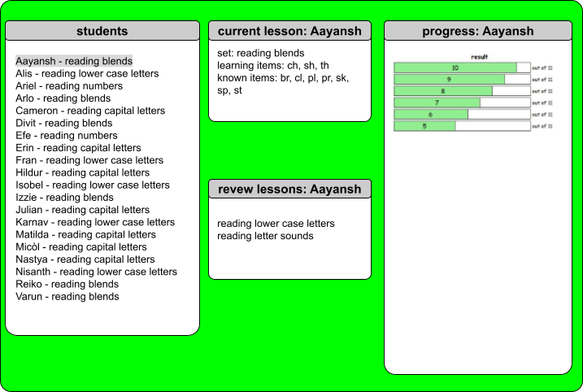

My plan is to design a dashboard to go with a flashcards app I made for students - the app is described here. The dashboard could be used by teachers to see the progress of their individual students.
The dashboard would take live data from several tables in a MySQL database and present it in a visually accessible way. A teacher could see an overview of all students, and focus on the progress of a specific student.
The dashboard would display this data.
Here is a mockup of the dashboard.

Here is the feedback I received from my tutor.
You have made a clear and purposeful start to this dashboard design, with a well-defined audience and use case.
It is particularly positive that you are designing for teachers and thinking about both an overview of all students and the ability to focus on an individual learner.
The data you propose to include—such as current lessons, review work, and progress over time—is appropriate and relevant to the task, and your layout (student list on the left, detail in the centre, and progress on the right) shows a sensible initial structure.
This demonstrates a good foundational understanding of how dashboards can support user needs.
To develop this further, you need to move beyond description and begin justifying your design decisions using data visualisation principles.
At present, the visual design lacks hierarchy and clarity—for example, the bright background and dense text make the interface harder to read, and the progress chart is not clearly explained.
You should think more carefully about your choice of visualisations (e.g. when to use bar charts vs line charts), define what your metrics actually represent, and explain how users will interact with the dashboard (such as filtering or selecting a student).
Overall, this is a promising early concept, but it requires more depth and refinement to reach a higher standard.
Focus on improving visual clarity, providing clear justification for your design choices, and expanding your mock-up with more detail and annotation.
This will help demonstrate not just what your dashboard does, but why it has been designed in that way.
I completed several tutorials about good dashboard design, and it was very useful to apply what I learned to my own database. It was also good to focus on designing the user interface before starting on actually making the dashboard - this will help me make a better dashboard now, and in the future in my career as a data scientist!